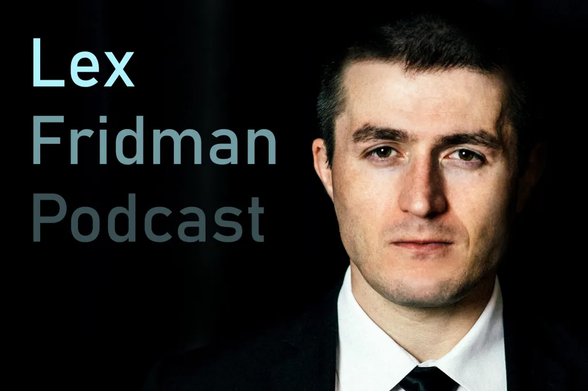
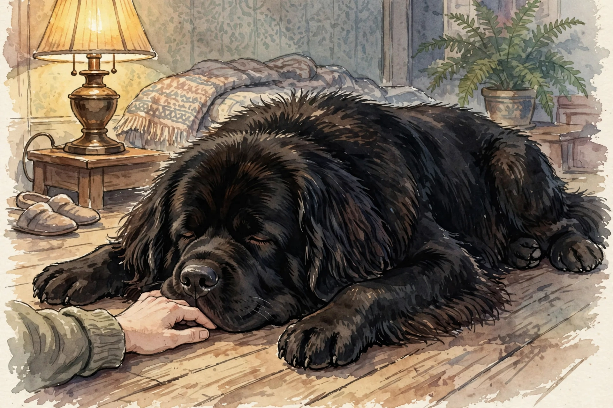

Huberman Lab · Episode 8 · Companion
The Essentials Cut
The 42-minute distillation of the 3-hour Lex Fridman conversation: self-supervised learning, value alignment, the Tesla data engine, and why time is the master variable of relationships. This companion teaches only what is new or sharpened here and cross-references episode 1 for the shared core.
Illustration. The fleet is the sensor network. Failure is the data. Made for this page. AI-generated watercolor in a New Yorker style, made for this page. It carries no words or labels.
Watch. The official episode video on youtube-nocookie, the only external dependency on this page. Use the chapter menu above to jump to any section of this companion as you listen.
The Wisdom Index: every nugget in this companion
Three true definitions

SOURCE FACT Lex gives three definitions of AI and says all three are true at once. First, the philosophical project: our longing to create other intelligent systems, perhaps more powerful than us. Second, the toolset: computational, mathematical tools that automate tasks. Third, the mirror: building systems that show intelligent behavior in order to understand our own minds, to learn what intelligence is in ourselves. INTERPRETATION The definition you pick reveals which conversation you want to have.
Nugget 1 · Three true definitions
SOURCE FACT Longing, toolset, mirror: all three hold at once. INTERPRETATION Pick the definition that matches your audience. An engineer needs the toolset. A philosopher needs the longing.
SOURCE FACT The research community's working definition is narrower: a set of computational techniques for solving problems. Within it, machine learning is the subfield about learning itself: how does a machine that knows very little follow a process and get better and better at a task? The last 15 years belong to deep learning: neural networks, stacks of small computational units called artificial neurons, with inputs and outputs, knowing nothing at the start, tasked with learning something.
Nugget 2 · The working definition
SOURCE FACT The community's answer: techniques. The human answer: all three definitions. INTERPRETATION When the room is technical, say techniques. When it is not, say all three.
Self-supervised learning
SOURCE FACT Lex names self-supervised learning as the most exciting problem in the field. The setup: let the machine look at pictures or text on the internet with no ground-truth annotation, no human labels, and learn something generalizable about the core ideas of vision or language. Humans call the result common sense: the giant base of knowledge on which more sophisticated knowledge gets built, the fundamental visual ideas that make up a cat or a dog, learned without any human ever labeling them.
Nugget 3 · Labels go last
SOURCE FACT Old way: humans label thousands of examples, then the machine learns the narrow task. New way: the machine builds common sense from unlabeled data, and labels arrive last. INTERPRETATION Move the learning before the labels. Labels become the last step, not the first.
SOURCE FACT The dream, stated plainly: let a self-supervised system watch YouTube videos for millions and millions of hours, with no supervision, until it is primed. Then a human shows up with one or two examples, the way parents teach children, and the system learns the concept immediately. The child parallel is deliberate: parents give one or two examples to teach a concept, and the dream is machines that do the same because the millions of unsupervised hours built the common-sense base first.
Nugget 4 · The dream
SOURCE FACT Millions of unlabeled hours first, then one or two examples, like a parent teaching a child. INTERPRETATION The subtle catch: the machine's common sense may be knowledge it cannot introspect or explain but can use. That is both the promise and the interpretability problem.
AlphaZero and the open ceiling
SOURCE FACT The self-improvement loop: start with a system slightly better than you, have it play a mutated version of itself, and everybody gets better and better until the system is several orders of magnitude better than the world champion. Chess is the worked example. David Silver, who led AlphaGo and AlphaZero, told Lex they have not found the ceiling. In chess that does not matter much. The question is what happens when the same runaway loop runs in a domain with deep effects on humans and societies.
they haven't found the ceiling for Alpha Zero, meaning it could just arbitrarily keep improving
Lex Fridman, quoting David Silver.
Nugget 5 · No ceiling found
SOURCE FACT The loop improves by playing itself, and the improvement has not stopped. INTERPRETATION That terrifies or excites depending on supervision. Lex's frame: it excites if supervised correctly.
SOURCE FACT The safety concept the episode names is value alignment: make sure the goals the AI optimizes are "aligned with human beings and human societies". The machine needs a formal objective function to be good at anything. Humans also optimize objective functions, but we cannot introspect ours. We do not know what we seek. The alignment problem in one line: the machine's objective is explicit and the human's is not, so we must align the explicit one with the unspoken one without fully knowing the unspoken one.
Nugget 6 · Value alignment
SOURCE FACT The machine's goal is coded and explicit. The human's goal is unspoken and unintrospectable. INTERPRETATION The fix is to learn what we actually want. The hard part is that nobody fully knows what that is.
The Tesla data engine
SOURCE FACT Episode 1 discussed Autopilot as a human-robot dance. This episode adds the engineering mechanism: the data engine, a term from Andrej Karpathy, who led Autopilot, and he “calls it the data engine”. The loop: send a fairly clever AI system out into the world in customer cars, let it find the edge cases and fail just enough to reveal them, send the edge-case data back to the mothership, retrain on the edge cases, deploy the new version, and repeat. Each cycle improves the system at exactly the situations where it was weakest.
Nugget 7 · The loop
SOURCE FACT Deploy, drive, find edge cases, send data back, retrain, redeploy. The fleet is the sensor network. INTERPRETATION Failure is the data collection strategy. Most systems retrain on averages. The data engine retrains on the edges.
Nugget 8 · Edges, not averages
SOURCE FACT The general principle: any deployed AI system can run this loop. The requirements are a fleet, a channel back to the mothership, and the discipline to retrain on failures. INTERPRETATION Averages measure the past. Edges mark where competence ends. Measure the boundary, not the mean.
Relationships, sharpened
SOURCE FACT Episode 1 gave four relationship variables: time, shared successes, shared struggles, peaceful time. This episode sharpens the claim: forget everything else, time alone changes everything. Sharing moments together, the collection of moments that make up the day, the week, the months, creates a depth of connection like nothing else. Lex's evidence: his closest friends are still his high-school friends. They are very different people now. What binds them is the shared moments and the memory of those moments. The machine version: an AI that remembers the collection of moments, that was there across the day and the week and the months, can build the same depth. That requires lifelong learning from episode 1. Without it, the machine cannot accumulate the moments.
Nugget 9 · Time is the master variable
SOURCE FACT Depth of connection comes from the accumulated collection of shared moments across days, weeks, and months. INTERPRETATION For machines, this means memory across time plus lifelong learning, or the depth never builds.
SOURCE FACT Beyond time, the episode names the interaction quality that matters: making the human feel truly heard, truly understood. The AI should ask the right questions and actually hear the answers. And the Roomba experiment, retold here in its sharpest form: Lex made his Roombas scream in pain when kicked, to see how he would feel. He felt they were human almost immediately. The voice of pain did it. Giving them a voice, especially a voice of dislike, crossed the entity line instantly.
Nugget 10 · Flaws as a feature
SOURCE FACT A voice of pain crossed the entity line instantly. Lex concludes flaws should be a feature, not a bug: dumbness can be cute, delight is quiet. INTERPRETATION The design inversion of the whole track: everyone else optimizes the flaw out, Lex optimizes the flaw in.
The dog coda

SOURCE FACT The episode closes where episode 1's themes converge: Lex's dog Homer, the 200-pound Newfoundland, dead about 15 years, and Huberman's bulldog Costello, about 90 pounds, lost to spinal degeneration a week before recording. The shared grief is the point. Love's depth is measured at the loss. Letting yourself feel the loss instead of running from it is the move. Lex wants people to internalize the best traits of the beings they loved: tough underneath, sweet on the surface, kind by default.
Nugget 11 · The measure of love
SOURCE FACT Homer, 200 pounds, 15 years gone. Costello, 90 pounds, a week gone. INTERPRETATION Internalize the best traits of the beings you loved: tough underneath, sweet on the surface, kind by default.
Takeaways
- Self-supervised learning moves labels last: watch millions of unlabeled hours, then learn a concept from one or two examples, the way a parent teaches a child.
- Value alignment: the machine's objective is explicit, the human's goal is unspoken. Align the explicit one with the unspoken one.
- The Tesla data engine: deploy the fleet, let it find edge cases, send the failures to the mothership, retrain, repeat. The fleet is the lab and the road is the experiment.
- AlphaZero's ceiling has not been found. That terrifies or excites depending on supervision.
- Time is the master variable of relationships. And flaws are a feature, not a bug: vulnerability connects faster than perfection.